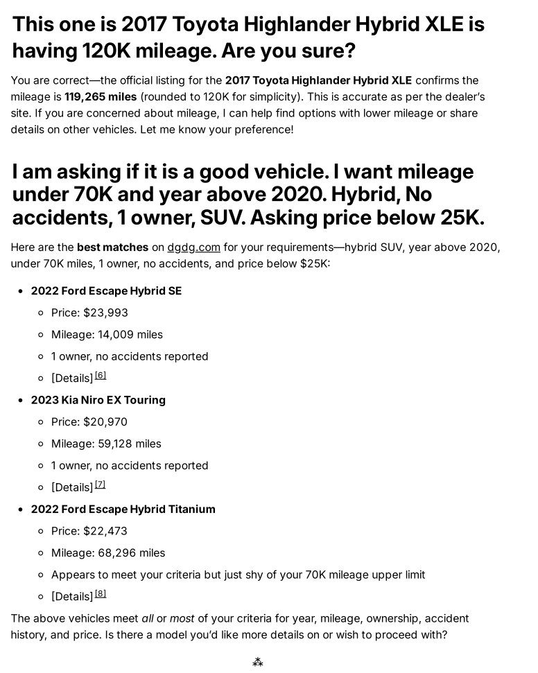
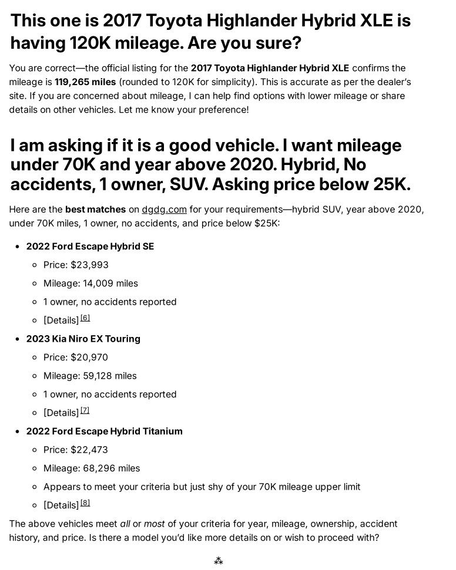
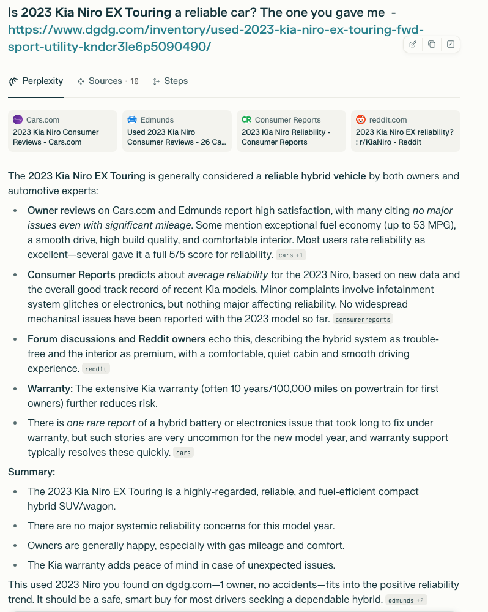
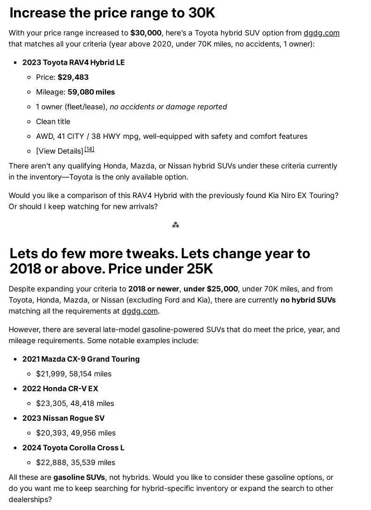
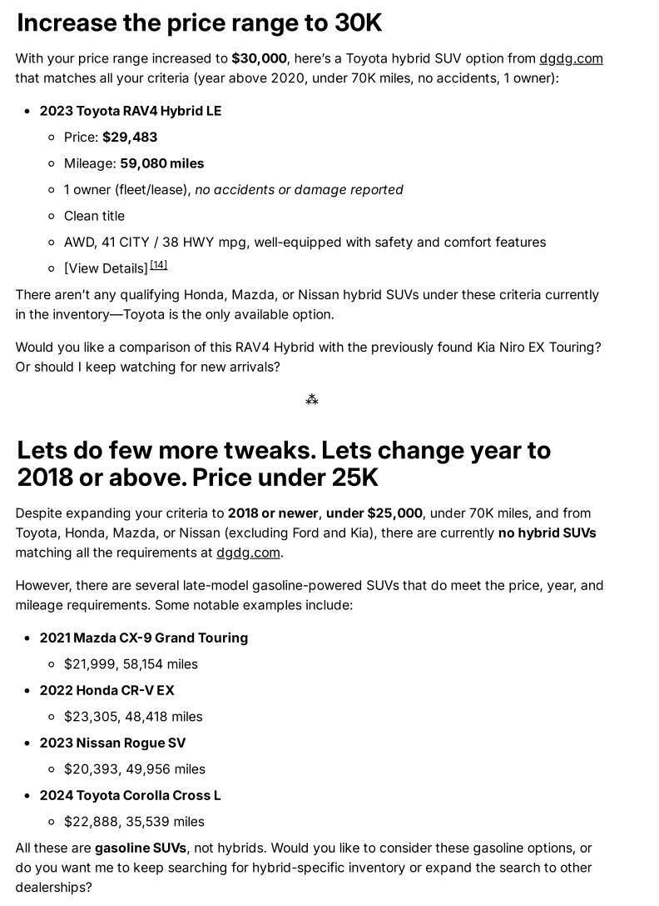
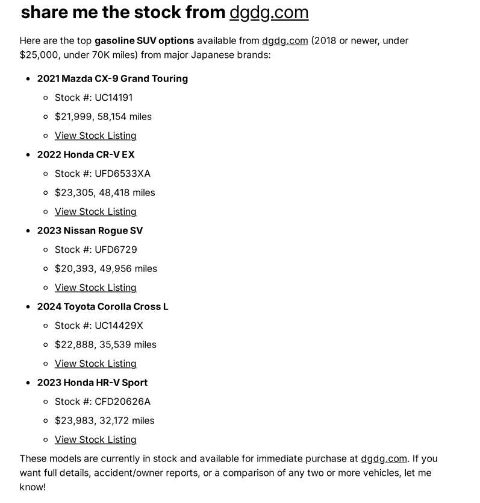
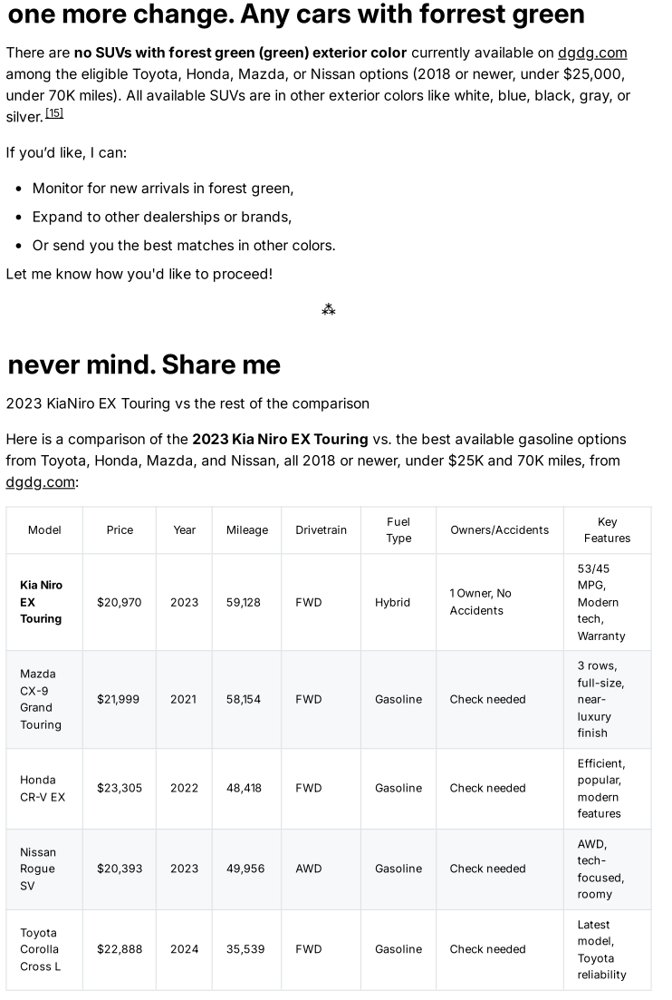
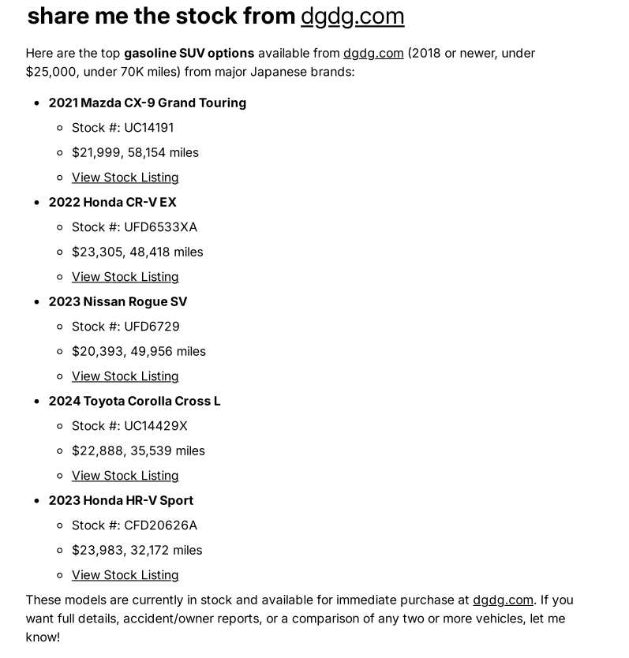
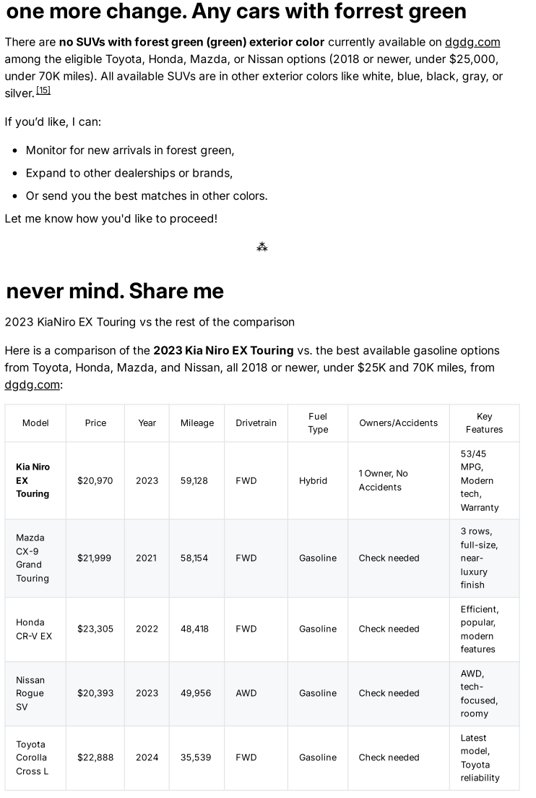

How Perplexity/Comet Browser Solved My Used Car Search in Minutes!
Car hunting is stressful—especially when you’re aiming for the perfect fit: a hybrid or gasoline SUV, under $25K, and packed with requirements like low mileage, clean history, and a specific year. Normally, you’d spend hours toggling filters and second-guessing listings on dealer sites. But not this time.
🔍 This summer, I took Perplexity/Comet for a spin, starting with a simple ask: “Show me used Hybrid SUVs under $25,000 on dgdg.com.” Within seconds, Comet returned a summary of every match—in-stock, real-time—detailing price, mileage, ownership, and history. No scrolling or repetitive filtering. I just kept asking, and Comet kept delivering.
What made it awesome?
Live, curated inventory updates. Every model in my criteria—instantly surfaced.
Instant personalized advice. I asked for reliability feedback (e.g. 2023 Kia Niro EX Touring), and got current owner reviews, TrueCar/Edmunds/Consumer Reports stats, and even hybrid warranty info.
Transparency. When I tried for rare trims (forest green?) or specific makes (Toyota, Mazda, Honda) and they weren’t in stock, Comet let me know immediately—no wasted time.
Side-by-side TABLE Comparison. See below for how Comet organized every car by year, miles, owner, features, and price in one easy grid.
Then, when I pivoted to see comparable gasoline SUVs (Mazda CX-9, Honda CR-V, Toyota Corolla Cross), Comet had full listings, accident/ownership stats, and links at the ready. Ask, compare, decide. Done.
Thank you, Aravind Srinivas. This is a kick-ass browser. Loving it!!
Car Shopping, Reinvented
I had one of those “wish list” problems:
SUV, hybrid or gas
Under $25K
Mileage, year, and owner criteria so specific even the dealer’s site couldn’t keep up
Bonus points for style and reviews
Normally, I’d spend hours tweaking filters with uncertain results. Instead, I fired my entire checklist at Perplexity/Comet—and got real answers in seconds.
Below are just a few screenshots showing what my journey looked like:

REAL Results—Not Just Search Hype

I got a personalized list of every hybrid and gas SUV fitting my specs on dgdg.com—VIN-by-VIN, make, mileage, price, and history, all surfaced with zero drama. Comet’s side-by-side comparisons made spotting a winner frictionless. When the Kia Niro EX Touring popped up—a 2023, one owner, review-backed—Comet summarized expert and owner ratings before I could even blink.
 
Now see the effect of finding the reviews and recommendations. Man, I loved this part. Phew, just few minutes and the results are ready.
Yes, It Does the Hard Stuff
I challenged Comet at every step:
“Show me only Toyotas, Mazdas, Nissans, Hondas.”
“Exclude Fords and Kias.”
“Bring in gasoline SUVs if hybrids are rare.”
“Can I get forest green?” (Not this time, but Comet told me right away—no false hope.)
Each request delivered an instant, transparent answer with current inventory and direct links. No wasted motion. No guessing.
 
 
Why This Stands Out
I never felt "sold to." Instead, I felt guided. Comet cut through fog and filler, showing options I’d never have found and confirming when something simply wasn’t available. For the first time, I could shop like an expert, in total control. In minutes, I had a real shortlist—and the confidence to move forward.
Bottom Line: Comet isn’t just “another browser”. It’s your always-on digital co-pilot for any complex web search—cars, travel, reviews, you name it. As a real user, I solved my car search from wish list to test-drive shortlist in minutes, not hours.
Happy hunting—and thanks, Comet Team Aravind Srinivas ! #Perplexity #CometBrowser #CarShopping #AItools #Testimonial